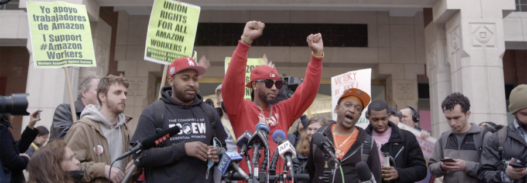

UNION (2024) with filmmaker Brett Story in-person
In 2020, in the midst of a global pandemic, historic supply chain disruptions, and soaring profits, Amazon workers at Staten Island’s JFK8 Warehouse launched an unprecedented unionization attempt. Led by charismatic organizer and fired warehouse worker Chris Smalls, the effort drew national attention, as well as a powerful corporate backlash that pitted old-school union-busting against 21st-century digital solidarity-building. Filmmakers Brett Story (THE HOTTEST AUGUST; THE PRISON IN TWELVE LANDSCAPES) and Stephen Maing (CRIME + PUNISHMENT) capture this dramatic labor struggle in real-time in UNION, a film that updates the classic techniques of direct cinema observational documentary for an era of Zoom meetings, social-media activism, and electronic countersurveillance.
For this screening, co-director Brett Story will appear in person to introduce and discuss the film, including the decision to self-distribute a work that dared to challenge one of the most powerful companies in the contemporary media landscape.
Story’s visit is co-sponsored by the Alice Kaplan Institute for the Humanities, which will welcome the filmmaker for their Public Humanities Keynote on Wednesday, February 11, 2026. More info on the keynote talk here: https://planitpurple.northwestern.edu/event/636642.
About the artist:
Empty heading
Brett Story is an award-winning filmmaker and writer whose work pushes the formal boundaries of political cinema. Her films have screened in theatres and festivals internationally, including at Sundance, New York Film Festival, CPH-DOX, and IDFA. She is the director of four feature films, including The Prison in Twelve Landscapes (2016) and The Hottest August (2019), and the author of the book Prison Land: Mapping Carceral Power Across Neoliberal America. The Hottest August was a New York Times Critics’ Pick and was called one of the best documentary films of 2019 by Rolling Stone and Vanity Fair, among others. Her most recent feature documentary, Union (2024), co-directed with Stephen Maing, premiered at Sundance 2024 where it won a Special Jury Prize. Union has screened at over 100 festivals worldwide and was shortlisted for an Academy Award.
Brett has held fellowships from the Guggenheim Foundation and the Sundance Institute, and was named one of Variety’s 10 Documentary Filmmakers to Watch. In both 2020 and 2025 she was nominated for a Cinema Eye Award for Best Director. She holds a PhD in geography and is currently an assistant professor of Media Praxis at the University of Toronto.